| 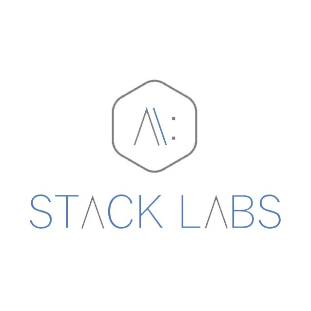 |
| February 17 - Yaoundé, CM |
Boris-Wilfried NYASSE
✓ I am a Stacker @Stack-Labs
 |
 |
 |
✓ Google Cloud Architect
✓ Passionate Computer Science Engineer
@bwnyasse
@stack_labs
#stacklabs
Have you ever heard about it ?
Have you ever use it ?

Any service that runs on the internet as opposed to your computer
Delivering computing power ( CPU, RAM,Network Speeds, Storage…) over a network ( usually on the internet)
physically having the computing resources at the customer location
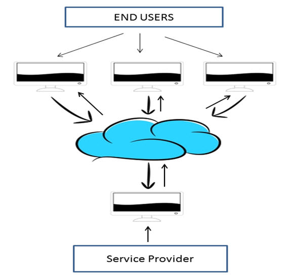
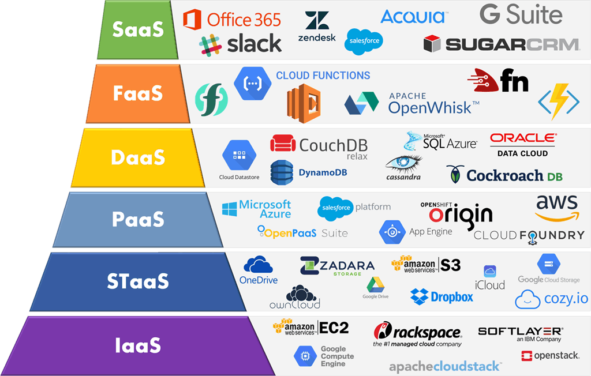
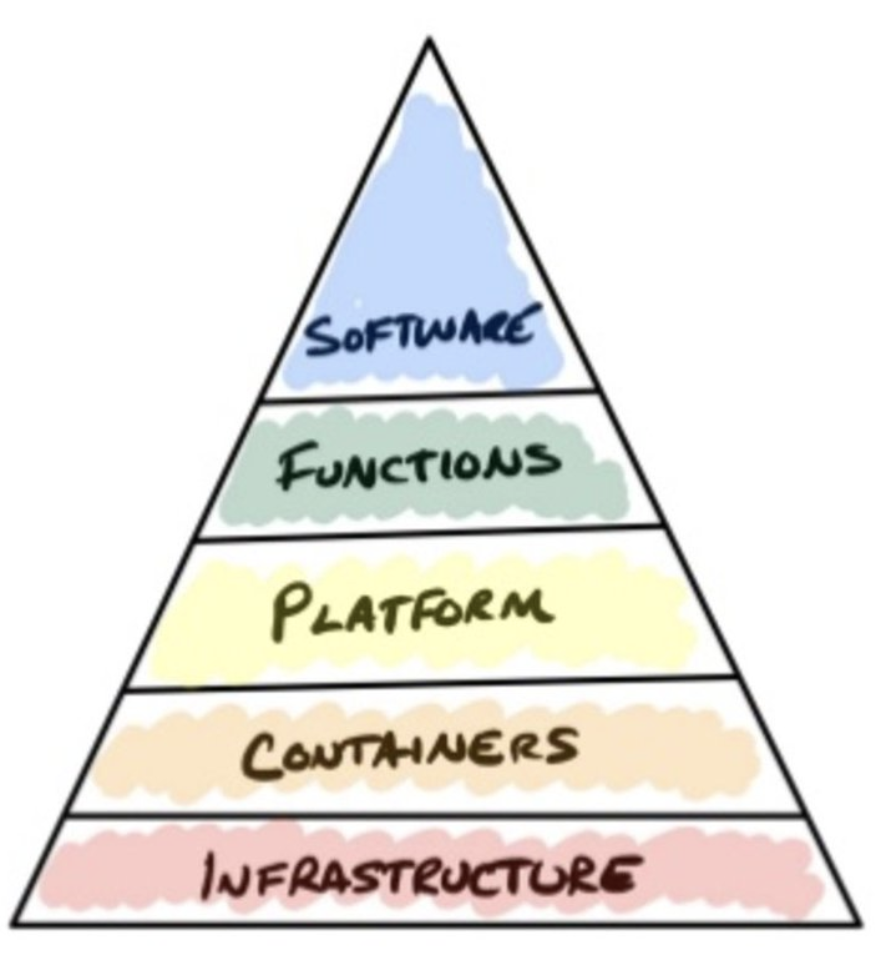

✓ Unlimited storage capacity
✓ Back-up and restore data
✓ Collaboration in different geographies
✓ Accessible Any Time and From Any Location
✓ Competitive edge over your competitors
✓ Reliability: get instantly updated about the changes
✓ DevOps: Automatic Software Integration ( CI/CD )
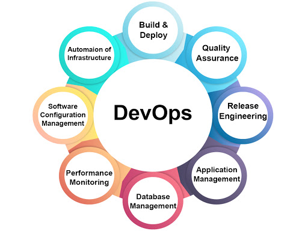
✓ Companies can reduce the size of their own data centers
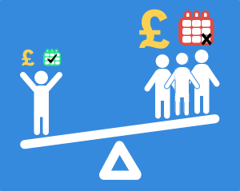✓ Pay As You Go or Pay As You Use
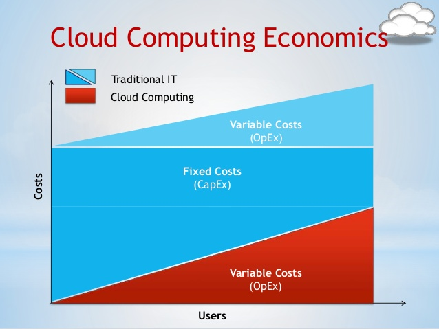Cloud computing is described by both its deployment model, as well as the service that it provides

Public Cloud : B2C type interactions
Private Cloud : owned by an organization.
Hybrid
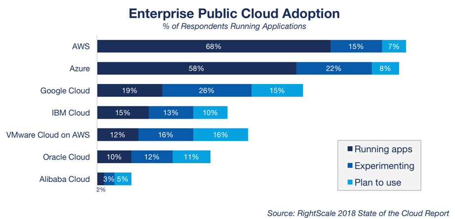
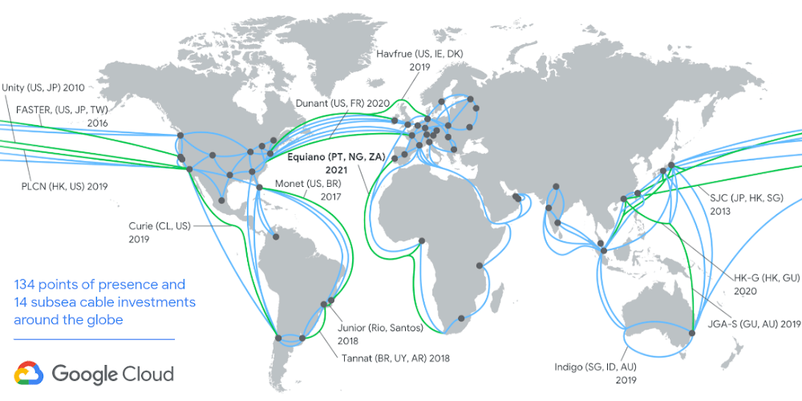
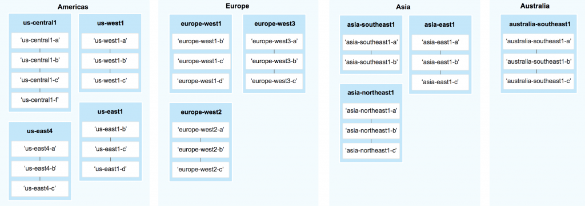
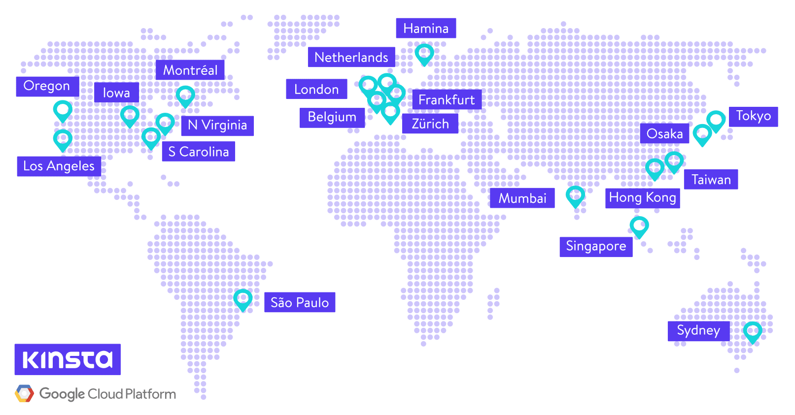
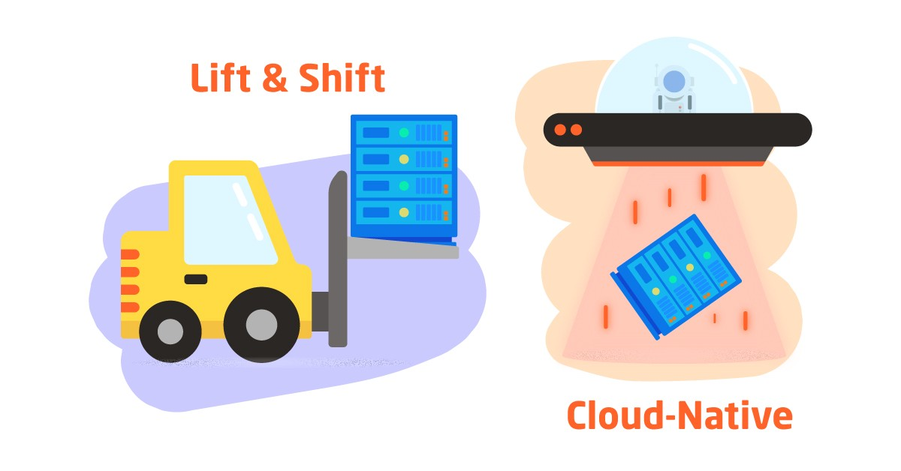
from on-prem to cloud compute instances
Fast migration vs Technical debt
long-term redesign for long-term benefits
Increased risk of vendor lock-in
IDENTITY - IAM - NETWORK - MONITORING - BILLING
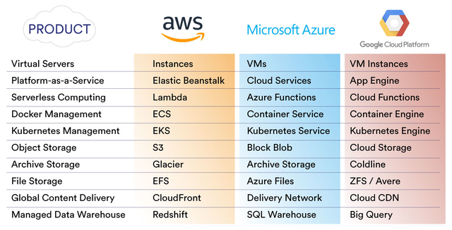
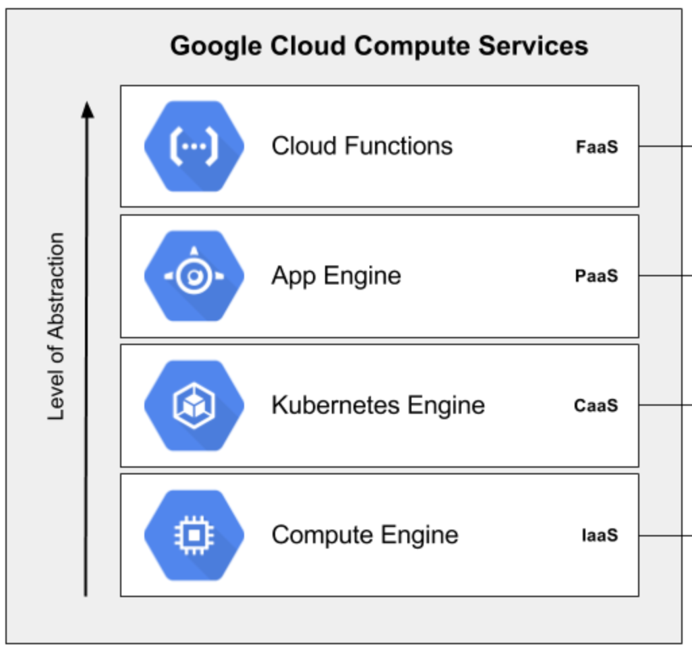
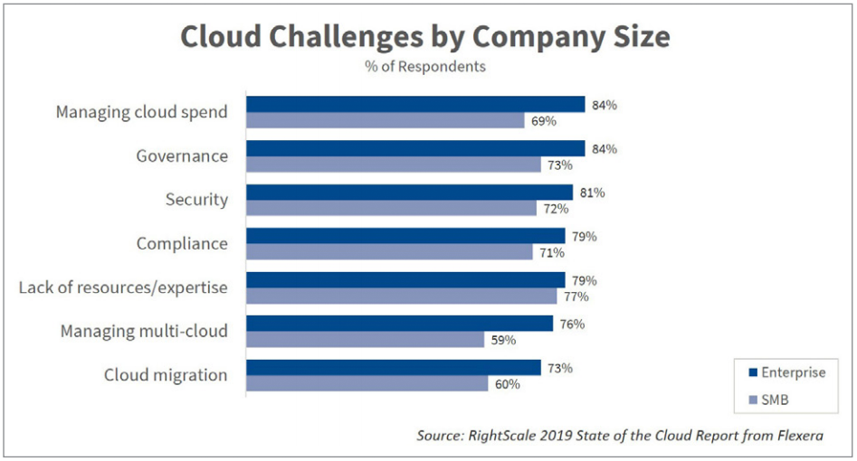
Adoption of Cost Driven Development ( FinOps )
Continuous learning : Cloud Expertise
Cloud optimizes costs in emerging markets
Look to speed time-to-market
Cloud latency issues remain
South Africa ,Mauritius, Kenya, Morocco, Tunisia
Nigeria, Ghana, Zimbabwe, Zambia, Tanazania, Senegal, Egypt, Ivory Coast, Namibia, Uganda
Scalable Usage : Netflix with streaming service
Chatbots: Siri, Alexa and Google Assistant - all are cloud-based natural-language intelligent bot
Big Data & Analytics : Hadoop , Cassandra …
Productivity & Collaboration : Google Docs & Office 365
Communication: WhatsApp
Healthcare : DoctoLib
IOT : SigFox
CD/CI: CloudBees, CodeMagic
Google Anthos
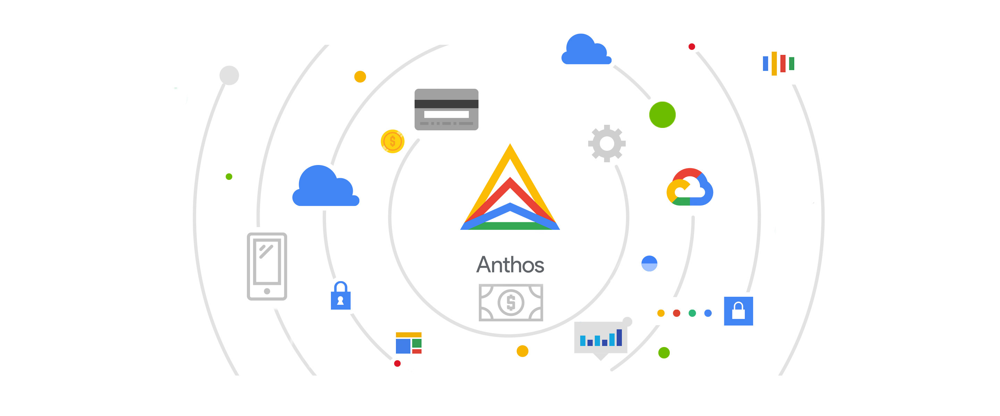
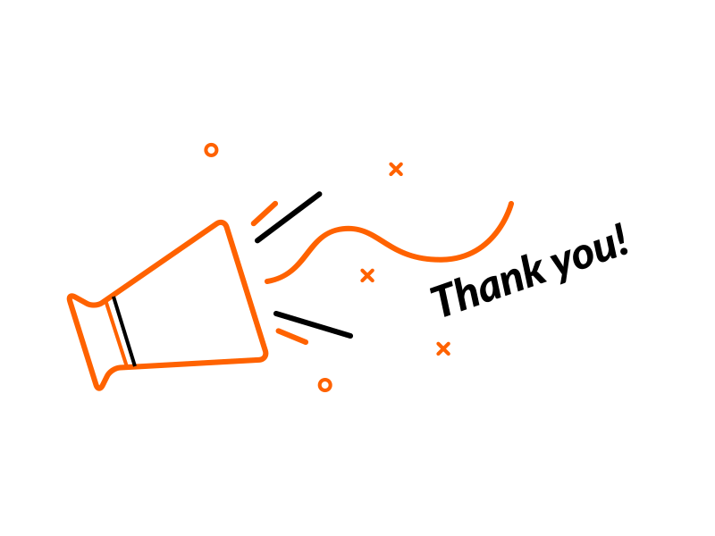